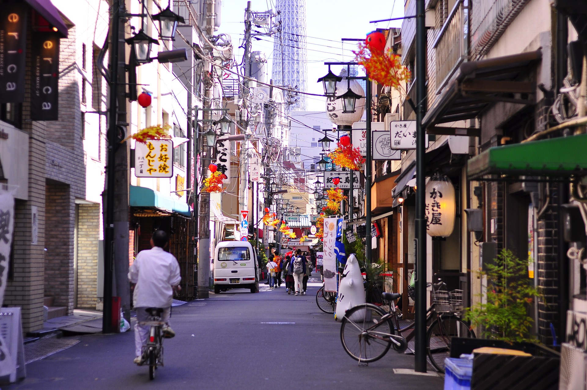
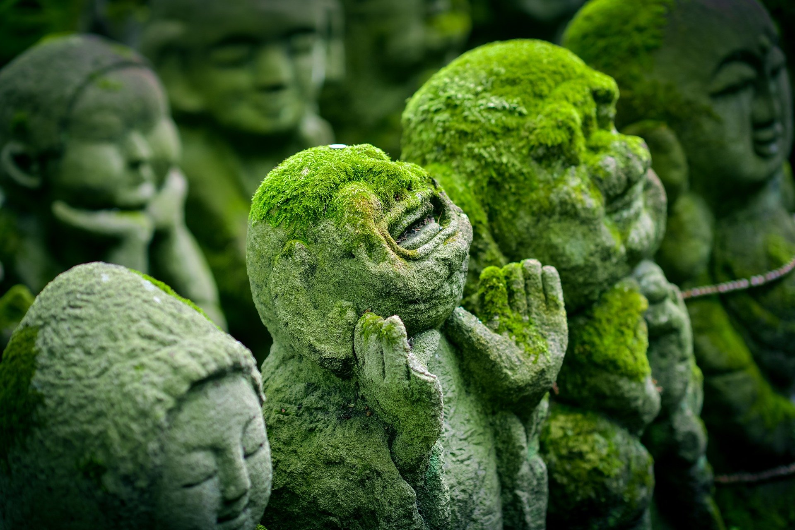
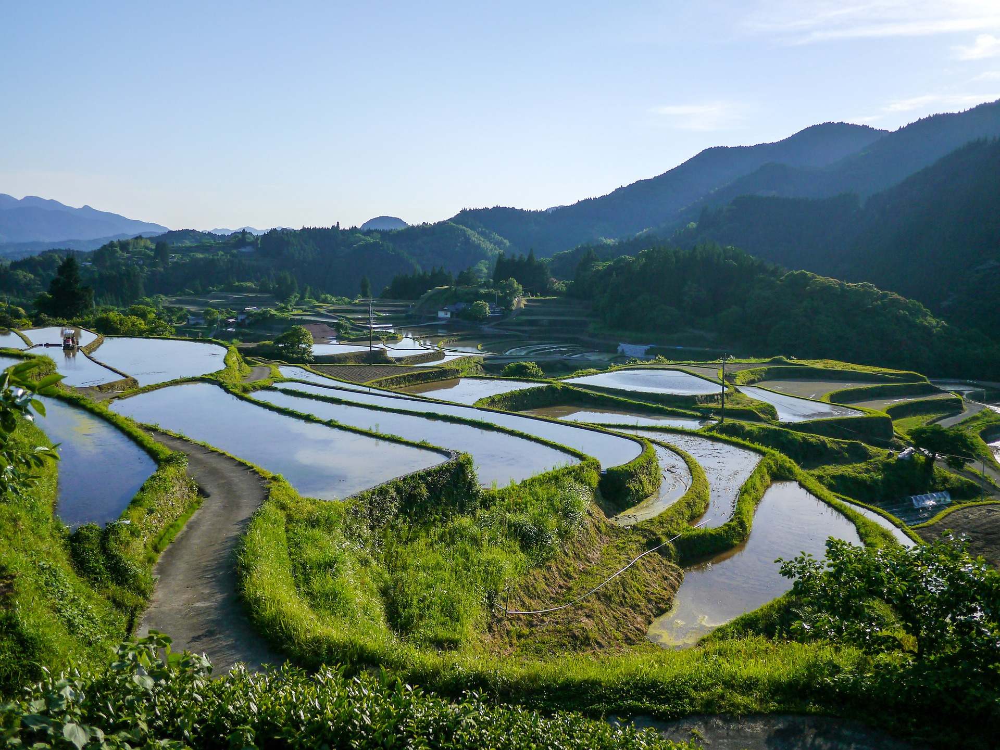
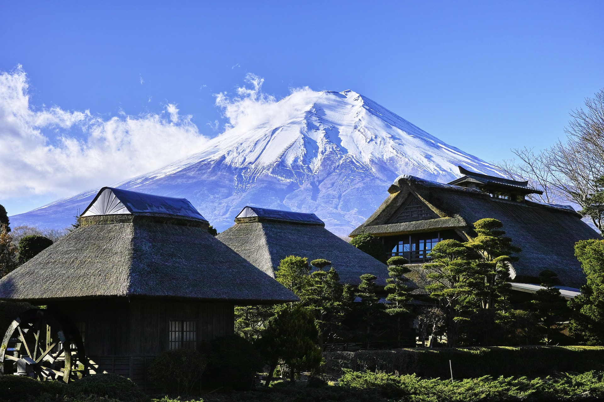
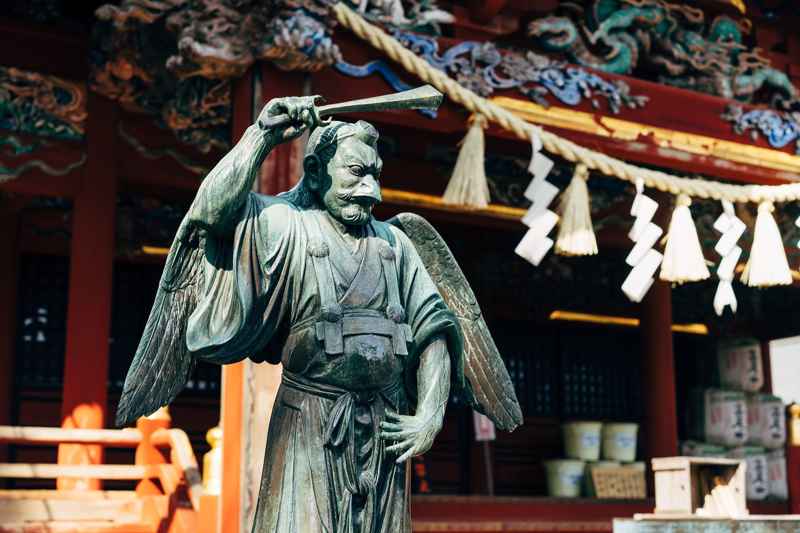
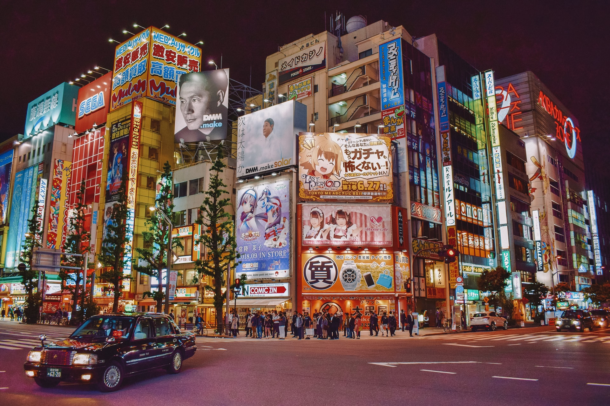
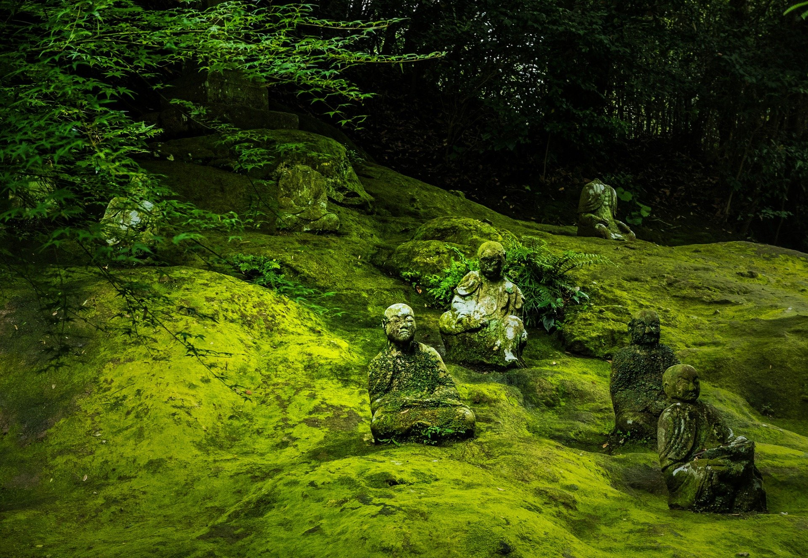

Tokyo, one of the greatest metropolises in the world...
Located geographically at roughly the center of the Japanese archipelago and in the southern part of the Kanto region, Tokyo shares borders with Chiba Prefecture to the east, separated by the Edogawa River; Yamanashi to the west, by a mountain range; Kanagawa to the south, by the Tamagawa River; and Saitama to the north.

Osaka, Japan's second largest metropolitan area after Tokyo.... Widely known for being Japan’s cuisine capital, Osaka is often the beginning or ending point for cruises exploring Japan. The city is unique blend of ancestral traditions and incredible technological innovations and it’s definitely worth spending a bit of time having a look around here.

Steeped in history, Kyoto is home to roughly one quarter of Japan's national treasures,... countless shrines and temples, and seventeen sites recognized by UNESCO as World Heritage Sites. Travelers to Kyoto can easily spend a week visiting the city's historical attractions such as the Kyoto Imperial Palace, Kinkakuji (Golden Pavilion), and Sanjusangendo.

Miyajima is a small island less than an hour outside the city of Hiroshima.... It is most famous for its giant torii gate, which at high tide seems to float on the water.
The sight is ranked as one of Japan's three best views.

“Toyama” means “rich with mountains”, and the name doesn’t disappoint!... The city offers stunning views of a series of 3,000 meter peaks belonging to the Northern Japan Alps. Located on the picturesque Japan Sea, only 250km northwest of Tokyo (just over two hours by Shinkansen), you will be amazed by the perfect scenery and dynamic landscape.

Kumamoto, located in the heart of Kyushu, is accessible within 90 min from anywhere in Kyushu.
... Within an hour drive from Kumamoto city, you will be able to enjoy the view of a vast ocean and the mountains, such as the Aso-Kujyu National Park in which Mt. Aso, the volcano with the world’s largest caldera and grand somma, is located, as well as the Unzen-Amakusa National Park.

Easy Access from Sky and Land Hyogo sits in the center of Japan, and it has easy access from everywhere by both the sky and the land.... It only takes approximately 1 hour by Express Bus to Kansai International Airport, where connected to world major cities. And it is convenient to go to cities such as Kyoto, Osaka and Hiroshima by various railways.

Shizuoka is full of spots of great historical importance:... uins which tell of Japan's ancient past, sites of old residences of feudal warriors, stations on the Edo period Tokaido highway, Shimoda, where Japan ended its years of isolation, and more. Don't miss its World Heritage sites and National Treasures. Shizuoka offers a taste of history and culture that will keep you wanting more.

Kanagawa Prefecture is a part of the Kanto region of Japan. Prefecture is a part of the Kanto region of Japan.... Kanagawa is characterized by the mountains, rivers, and sea that are within it, as well as for being close to Japan's most popular city, Tokyo. One of it's most well-known cities, Yokohama, is the main site for Kanagawa's business and economy relations, and it is also the capital city.